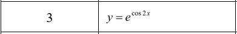
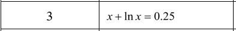
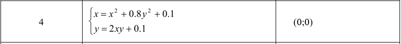

Завдання 1 Практика
Завдання 1.1

Щоб побудувати графік функції y = e^cos(2x) та отримати таблицю значень на проміжку [0, π] в Scilab виконав наступні кроки.
Визначив проміжок значень x. У даному випадку проміжок [0, π] можна визначити за допомогою функції linspace, яка створює рівномірно розподілені значення між двома кінцями проміжку.
x = linspace(0, %pi, 11);
Визначте функцію y для заданих значень x.
y = exp(cos(2*x));
Використав функцію plot, яка дозволяє побудувати графік з вказаними значеннями x та y.
plot(x, y);
Далі в коді створює матрицю, де перша колонка містить значення x, а друга колонка містить значення y. Функція disp виведе цю матрицю на екран у вигляді таблиці.
disp([x', y']);
Для перевірки в excel побудували стовпчик x зі значеннями проміжку. У іншому стовпчику вводимо формулу та отримуємо відповідні значення. Далі будуємо діаграму.
Завдання 1.2

Рівняння x + ln(x) = 0.25 є трансцендентним рівнянням, що означає, що воно не має аналітичного розв'язку у вигляді простої формули.
Для чисельного розв'язування рівняння, спочатку визначте функцію, яку потрібно розв'язати.
function y = f(x)
y = x + log(x) - 0.25;
endfunction
Далі, використовуємо чисельний метод для знаходження кореня рівняння, використовуємо вбудовану функцію fsolve, яка реалізує метод Ньютона.
x0 = 1; // Початкове наближення
x = fsolve(x0, f);
disp(x);
Для перевірки в excel записуємо формулу в комірку і привязуємо значення x до іншої комірки. Далі використовуємо “Дані >> Аналіз >> Пошук рішення” для розв’язку та отримуємо значення x.
Завдання 1.3

Для знаходження чисельного розв'язку даної системи рівнянь за допомогою Scilab, знадобиться використати ітераційний метод.
x = 0;
y = 0;
Визначимо функції для обчислення значень x та y на кожній ітерації.
function x_next = update_x(x, y)
x_next = x^2+0.8*y^2+0.1
endfunction
function y_next = update_y(x, y)
y_next = 2*x*y+0.1
endfunction
Визначимо кількість ітерацій та точність.
iterations = 10;
tolerance = 1e-6;
Виконуємо ітераційний процес для знаходження розв'язку системи рівнянь.
for i = 1:iterations
x_prev = x;
y_prev = y;
x = update_x(x_prev, y_prev);
y = update_y(x_prev, y_prev);
if abs(x - x_prev) ≺ tolerance && abs(y - y_prev) ≺ tolerance
break;
end
end
disp("x="+ string(x) +" y="+ string(y));
Для перевірки в excel створюємо два стовпчика з відповідними формулами, в якості початкового значення x та y беремо точку (0;0) і методом ітерацій отримуємо наближене значення x та y.